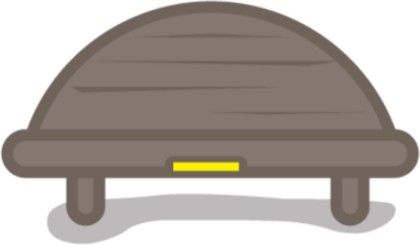

{{ initials }}
Firesoul Gateway
{{ greeting }}
{{ firstName }}.
Latest
Flash Funding — Monday, April 20
See details

Enter Gateway
Gateway menu
My Sacred Place
Kirby Lane
Journal Entries
6
The Network
Funding & Grants
Toolkits & Resources
Gatherings
naturesacred.org